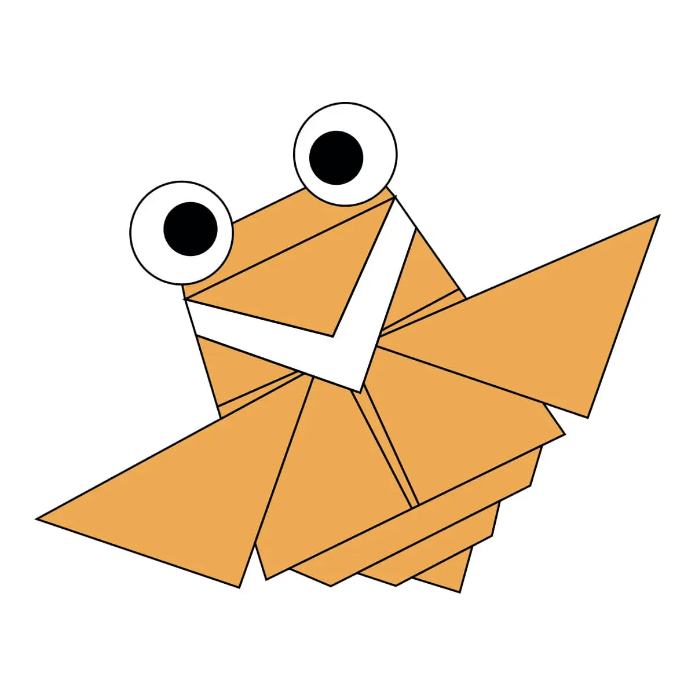

Interesting Facts About Camels:
- There are two types of camels: One humped or “dromedary” camels and two humped Bactrian camels.
- Camels have three sets of eyelids and two rows of eyelashes to keep sand out of their eyes.
- Camels have thick lips which let them forage for thorny plants other animals can't eat.
Interesting Facts About Chameleons:
- The largest chameleon is the Parson’s chameleon.
- It can grow up to 27 inches (69.5 centimeters) long.
- These species come in a range of colors, and many species have the ability to change color.

Interesting Facts About Cicadas:
- There are around 3,000 cicada species.
- They vary in size from 0.75 to 2.25 in (2.2 to 5.5 cm) long.
- Their wings are transparent and can seem rainbow-hued when held up to a light source.
Interesting Facts About Pandas:
- Giant pandas are good at climbing trees and can also swim.
- An adult panda can eat 12–38 kilos of bamboo per day.
- The giant panda’s scientific name is Ailuropoda Melanoleuca.

Interesting Facts About Pigeons:
- Pigeons are incredibly complex and intelligent animals
- Pigeons are renowned for their outstanding navigational abilities.
- Pigeons are highly sociable animals.